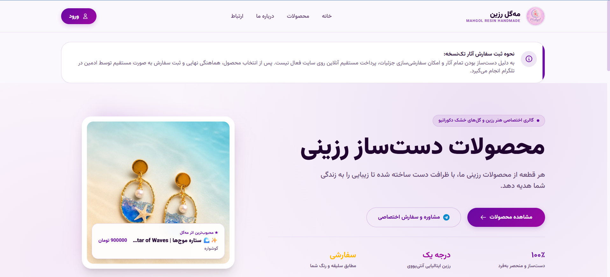
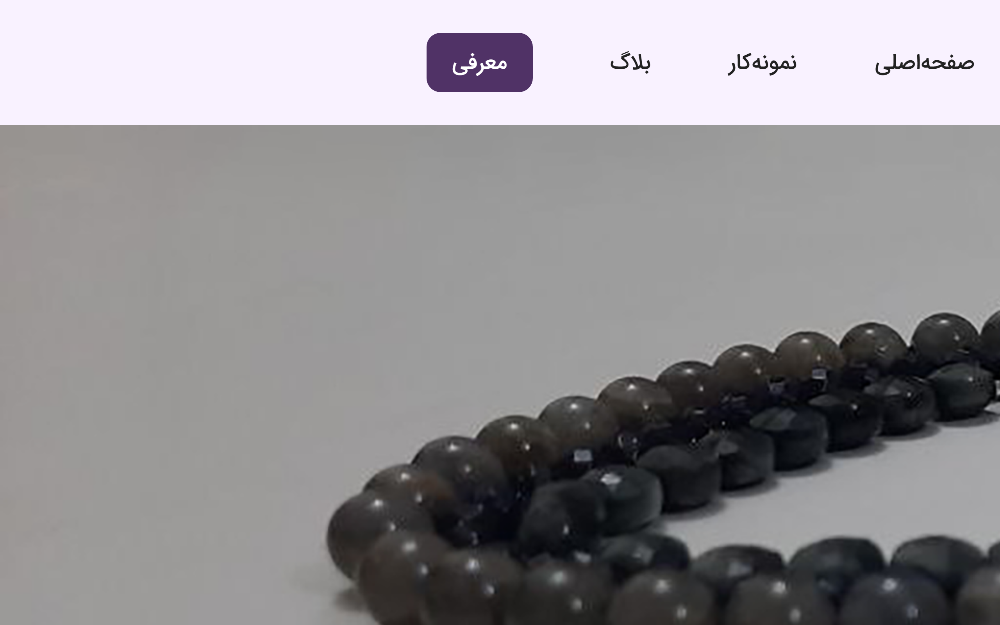

electrical engineering, built with precision.
Undergraduate at Amirkabir University of Technology (Tehran Polytechnic). I work at the seam where firmware meets hardware — ESP32 data acquisition, VHDL on FPGA, Qt desktop applications, Django services. Teaching assistant for Electromagnetics and Digital Logic Design.

- ESP32
- VHDL / FPGA
- C / C++
- Qt 5·6
- Python
- Django
- SCADA
- IEC 61850
- RTL Design
- SQLite
- Git
the index
Every entry below is a repository you can open and read. This section is wired directly to GitHub — when a new repository appears, its card is generated automatically from the top of its README.
syncing…snapshot pending first sync
I would rather build the thing than write about building it.
- Studying
- B.Sc. Electrical Engineering (Control Major · Electronics Minor), Amirkabir University of Technology (Tehran Polytechnic)
- Teaching assistant
- Electromagnetics (Dr. Askarpour) and Digital Logic Design (Dr. Pourfard), separate semesters
- Focus
- Embedded data acquisition, VHDL on FPGA, Qt desktop applications, Django web services
what i actually use
Grouped by where it sits in a build, not by how confident it sounds. Anything I have only read about is not on this list.
| Layer | Tools | Used in |
|---|---|---|
| Silicon | ESP32 · ESP32-S3 · ATmega32 · FPGA | Parking DAQ, door lock, Hamming |
| Hardware description | VHDL · RTL design · ModelSim | Packet processor, logic lab |
| Firmware | C · C++ · AVR assembly · Arduino | All embedded builds |
| Application | Qt 5/6 · QSS · Python · Django | Qt Deep Dive, web services |
| Data | SQLite · PostgreSQL · REST | Parking telemetry, shop backend |
| Bench | Git · GitHub · VS Code · Proteus | Every project above |
about
I am an electrical engineering undergraduate at Amirkabir University of Technology. Most of what I know came from projects that did not work the first time — a servo that jittered until the PWM channel was right, a decoder that passed simulation and failed on the board, a Django worker that died quietly every night at three.
I prefer hardware you can touch and courses you can teach. Two semesters as an undergraduate teaching assistant — Electromagnetics with Dr. Askarpour, Digital Logic Design with Dr. Pourfard — taught me that explaining a concept twice is the fastest way to find the hole in your own understanding of it. My academic path is anchored on a Control Systems major, actively reinforced with an Electronics minor.
This page is an index, not a pitch. If something here is relevant to you, the repository is one click away and the commit history is honest about how long it took.
internships & active research
SCADA Security & Substation Automation (Modje Niroo Internship):
I am currently passing an engineering internship at Modje Niroo, actively analyzing, studying, and documenting conventional substations, DCS (Distributed Control Systems), and national SCADA telemetry layouts in Iran's power grid.
My current research focuses on the IEC 61850, DNP3, IEC 60870-5-104, and Modbus protocol chains. Specifically, I am compiling detailed technical logs on GOOSE message retransmission latency under heavy traffic spikes, RTU marshalling logic, FEP gateway mapping, and compiling risk matrices for potential cybersecurity threat vectors on industrial dispatching.
web designs
Selected web interfaces and storefront systems I have engineered.

Mahgol Resin E-Commerce Storefront
- Django
- Celery
- Telegram Bot
- PostgreSQL
A high-performance production e-commerce engine integrated with an active Telegram notification bot for seamless purchase workflows. Features a royal purple and gold theme customized to match the brand's exact design palette, asynchronous order dispatching with Celery, and real-time database-driven product inventory management.
Production-grade storefront · Live→

Metis Web Application
- Next.js
- TypeScript
- Tailwind CSS
- Vercel
A modern web application built with Next.js and TypeScript, featuring a responsive design with Tailwind CSS. Deployed on Vercel with automatic CI/CD pipeline.
Live application · Vercel deployment→
get in touch
Telegram is checked daily. Drop a direct message there.
- GitHub
- @Mahbodbe
- mahbod-bemanicham
- mahbod2023@gmail.com